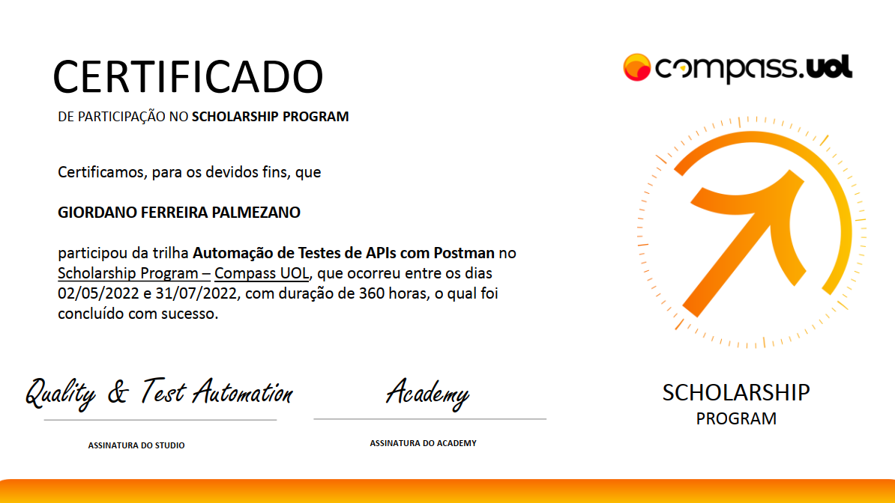
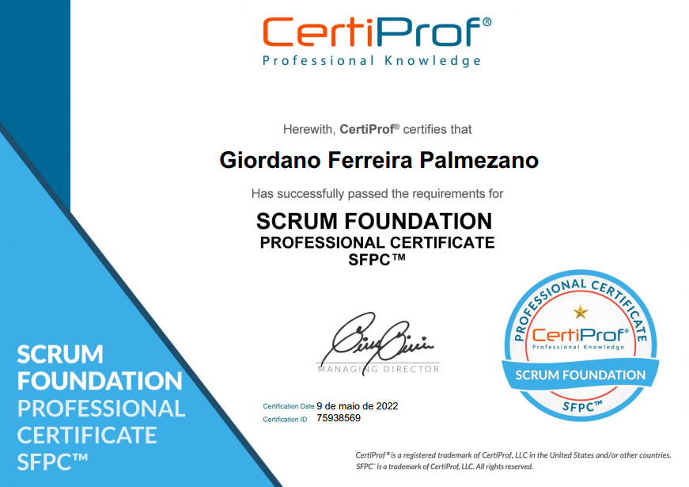
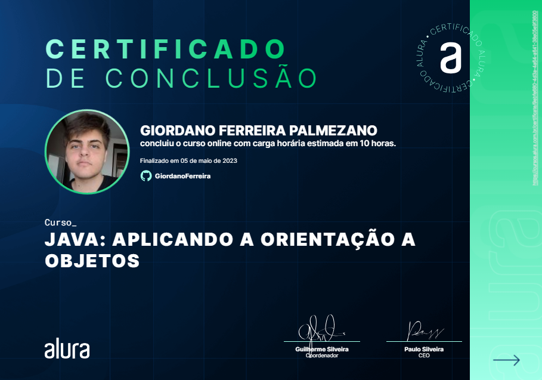
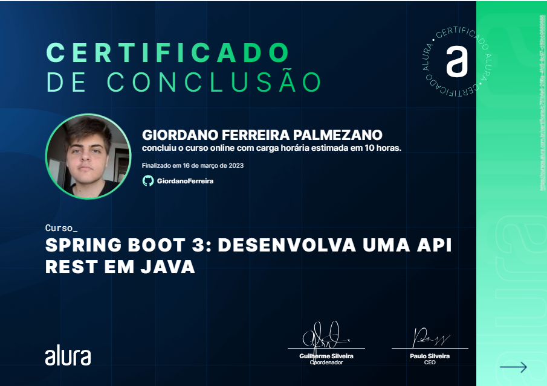

Sobre mim
Olá, meu nome é Giordano.
Sou bacharelado em Sistemas de Informação, com uma grande paixão por tecnologia e desenvolvimento de software. Estou focado em ingressar no mercado de desenvolvimento Fullstack, onde posso aplicar e expandir minhas habilidades.
No meu tempo livre, sou um entusiasta do mundo geek e adoro jogar games. Esses hobbies não apenas me divertem, mas também me inspiram e me mantêm atualizado com as últimas tendências tecnológicas.
Estou animado para encontrar uma oportunidade onde possa contribuir com minha paixão pelo desenvolvimento e meu desejo contínuo de aprender e crescer na área de tecnologia.
Objetivo Profissional
Tornar-me um desenvolvedor Fullstack, utilizando minhas habilidades em Java e Spring Boot para contribuir com o desenvolvimento de soluções inovadoras e eficientes.
Resumo Qualificações
- Experiência em desenvolvimento de software utilizando Java e Spring Boot.
- Conhecimento em desenvolvimento front-end com HTML, CSS e JavaScript.
- Familiaridade com bancos de dados relacionais (MySQL, PostgreSQL).
- Habilidades em resolução de problemas e trabalho em equipe.
- Experiência em metodologias ágeis (Scrum, Kanban).
Habilidades Técnicas
- Front-End: HTML5 - CSS3 - Javascript
- Back-End: Java - Linguagem de programação que mais possuo experiencia e me desenvolvo mais.
- Frameworks: Spring - React - Bootstrap
- Banco de Dados: MySQL - PostgreSQL - SQL Server
- Ferramentas: Git - Postman
- Metodologias: Scrum
Formação Acadêmica
- Bacharelado em: Sistemas de Informação
- UNIESP, João Pessoa - PB
- 06/2020 - 07/2024
- CRE - 9.60
Experiência Profissional
- Compass.Uol - Estagiario QA
- Brasil - Remoto
- 05/2022 - 07/2022
- Competências: Postman API · JavaScript · API Rest · Metodologias agile · Scrum · Git · GitHub
Sobre o Estágio:
Estágio em Automação de Testes de APIs com Postman: Estágio de 3 meses em que tive a oportunidade de me desenvolver e estudar tecnologias e metodologias utilizadas no mercado de trabalho, aprendi e utilizei durante esse período o SCRUM metodologia ágil que agregou bastante no meu desenvolvimento profissional, tive a oportunidade de ter um Scrum master e participar de uma equipe, evoluindo minha comunicação e minhas soft skills, em geral. Meus estudos tiveram o foco em APIs Rest e Postman para a realização de testes em APIs, aprendi e pratiquei também JavaScript, além de utilizar bastante o Git e GitHub para o versionamento dos meus projetos desenvolvidos.
Certificado - 
Projetos
API Rest Plataforma de Cursos
API Rest para o gerenciamento de uma plataforma de cursos, com crud completo para usuários , cursos e pedidos.
- ● Comunicação com protocolo HTTP.
- ● API baseada nos conceitos Rest, Restful, CRUD e SOLID.
- ● Persistência de Dados com JPA em conjunto do Banco de Dados Relacional PostgreSQL.
- ● Projeto de conclusão de curso de desenvolvimento de uma API REST utilizando o ecossistema spring, com spring boot, data, validation, Web e etc.
Tecnologias: Java, Spring Boot, PostgreSQL, Swagger, Postman
API Rest Clinica Médica
Desenvolvimento de uma API Rest utilizando Spring Boot e suas tecnologias para estudo.
- ● Monitoramento de cadastro de médicos e pacientes, além de fazer alteração e exclusão dos dois.
- ● Tecnologias utilizadas Spring Boot 3, Java 17, Lombok, MySQL/Flyway, JPA/Hibernate, Maven, Postman.
- ● Desenvolvimento de CRUD completo.
- ● Projeto desenvolvido durante curso de Spring Boot da Alura.
Tecnologias: Java, Spring Boot, MySQL, Postman
API Rest E-commerce
API Rest para um e-commerce, com crud completo para clientes, pedidos e produtos.
- ● Comunicação com protocolo HTTP.
- ● API baseada nos conceitos Rest, Restful, CRUD.
- ● Persistência de Dados com JPA em conjunto do Banco de Dados Relacional MySQL.
- ● Projeto feito para a matéria de Tecnologias Web, utilizando Java com Spring Boot e suas tecnologias.
Tecnologias: Java, Spring Boot, MySQL, Postman
Certificados e Cursos
Scrum Foundation Professional Certificate SFPC
Certificado de Scrum metodologia ágil.
Certificado:
Java: Aplicando Orientação a Objetos.
Curso de Java da Alura.
Certificado:
Spring Boot 3: Desenvolva uma API Rest em Java.
Curso de Spring Boot da Alura.
Certificado:
Git e Github: Controle e compartilhe o seu código.
Curso de Git e Github da Alura.
Certificado:
Idiomas
- Inglês: Básico
- Português: Fluente ou Nativo